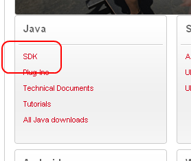
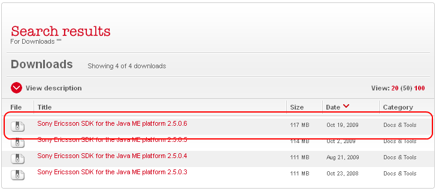
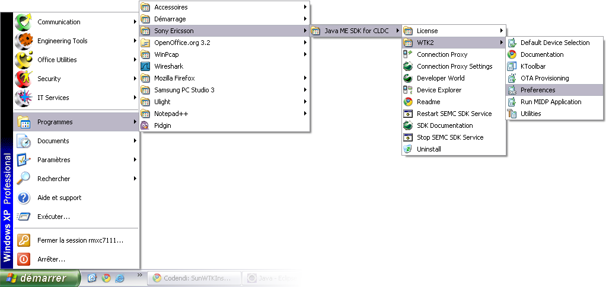
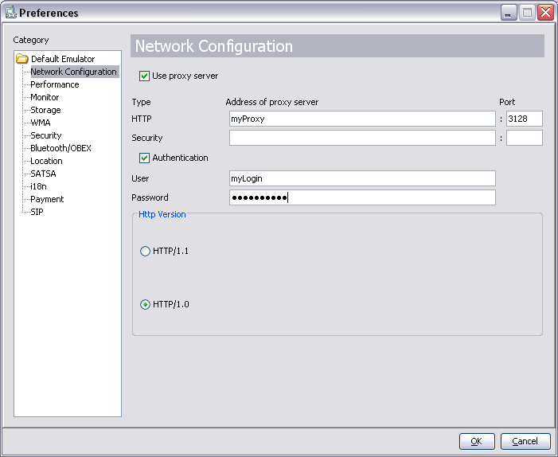

Sony Ericsson Toolkit is accessible on the Sony Ericsson web site.
URL: http://developer.sonyericsson.com/cws/devworld/downloads
Select Java / SDK link.

Download the last SDK for Java ME platform.

Execute the downloaded file and follow the default installation.
Open the ToolKit preferences (via the Start menu of MS Windows).

Select network configuration page.
Enter proxy configuration and valid.

Via the MS Windows Start menu, launch Run MIDP Application...
shortcut (Programs > Programs > Sony Ericsson > Java ME SDK for CLDC
> WTK2 > Run MIDP Application...).
Select your widget JAD file and launch it.
Emulator is launched and we can use the widget.
Open console.
Move to toolkit folder (Windows command: cd C:\SonyEricsson\JavaME_SDK_CLDC\WTK2\bin).
Use emulator application to launch widget (Windows command: emulator -Xdescriptor:<MyWidget>.jad).
Example to launch Bluegammon toolkit example:
emulator -Xdescriptor:C:\SonyEricsson\JavaME_SDK_CLDC\WTK2\apps\Bluegammon\bin\Bluegammon.jad.
All widgets can be configure independently.
On Eclipse, open app.properties file on root folder for a widget project
(/MyWidget/app.properties).
Add following lines (change yourAccount by your Windows account):
Launch Widget: The Sun WTK emulator is launched.